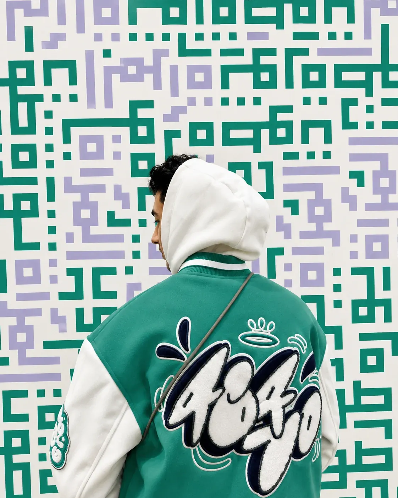

Logiciels
Vidéo
- CapCut
- After Effects
- DaVinci Resolve
Intégration multimédia — Portfolio 2026
Création immersion

Présentation vidéo
Travaux sélectionnés
Chargement des projets…
Ce que je maîtrise
Logiciels
Logiciels
Logiciels
Outils
Techniques
Techniques
Techniques
Organisation
+ Qui suis-je ?
Je suis Walid Cheour, étudiant en intégration multimédia avec une passion pour la création visuelle et sonore. Mon travail réunit le montage vidéo, le design graphique et la production audio.
Je recherche un poste permanent à temps plein en création visuelle, identité de marque ou production audiovisuelle.
+ Travaillons ensemble
Vous avez un projet, une offre ou une question ? Je suis disponible et prêt à collaborer.
Envoyer un courriel walid.cheour97@hotmail.com